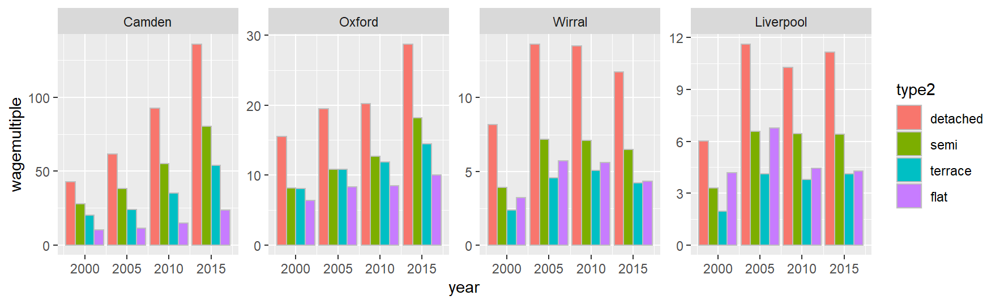

19 Facetting and dodging: getting as much info into one graph as humanly possible
There’s a quote about visualisation doing the rounds:
``A designer knows he has achieved perfection not when there is nothing left to add, but when there is nothing left to take away.’’
That’s all very well, but sometimes it’s good to stuff as much information into one chart as possible… This section covers two useful things to help us do this:
ggplot has a rather nice feature called facetting that allows us to put data into separate panels in one plot. As with other mapping of aesthetics, to do this we need one column that will act as our facet category, to split across multiple panels.
The position function in geometries also has a very useful option: “dodge”. We’ve already seen position = “stack”: this stacked mapped variables on top of each other in a bar chart so their counts summed. Instead, dodge places them next to each other.
We’ll also use this as an opportunity to explain a bit more how factors work.
Let’s ask:
How have prices (in terms of wage multiple) of different types of house changed (detached, terraced etc) for a range of years, in four local authorities?
Again, this is the wage data combined with local authority house price data. In case this isn’t already loaded, here’s the code again. Note, we already know the year column will need converting to numeric, so we do that here too.
wages <- read_csv('data/medianWages_localAuthority.csv')
#Make wages into long data, year in its own column
wagesLong <- wages %>%
gather(key = year, value = medianwage, `1997`:`2018`)
#Make year numeric in preparation for the join
wagesLong$year <- as.numeric(wagesLong$year)
#Reload sales at local authority level
sales <- readRDS('data/landRegistryPricePaidLocalAuthoritySelection.rds')
#Add the year column
sales$year <- year(sales$date)As before, we need to make a summary of the house price data - but with an addition. We want average price per year, per place AND per house type. As always, you can just add this to the group_by verb and dplyr will create the grouped data already in long form.
We also initially filter to get just four specific years, two each side of the crash. Each of these will get its own facet.
saleSummary <- sales %>%
filter(year %in% c(2000,2005,2010,2015)) %>%
group_by(localauthority,year,type) %>%
summarise(meanPrice = mean(price))## `summarise()` has grouped output by 'localauthority', 'year'. You can override using the `.groups` argument.We’re now ready to join, as we did before. We use inner_join again: so this will only keep years (and local authorities) common to both, in this case just 2000, 2005, 2010 and 2015.
Because the saleSumary data now has type in long form, the join will repeat values for the joined wages dataframe. Take a look once joined, you can see there are repeated wages for each house type (but unique price averages).
Let’s also add the yearly wage and wage multiple columns here. Note: you could of course join these two separate tasks with the pipe operator. It doesn’t always help with readability though - sometimes it’s better to keep things a little separate.
#See the dataframe: median wage repeated for each year / place
price_n_wage <- inner_join(
wagesLong,
saleSummary,
by = c('year', 'Area' = 'localauthority')
)
#Make new columns
price_n_wage <- price_n_wage %>%
mutate(
medianwageyearly = medianwage * 52, # weekly wage to yearly wage
wagemultiple = meanPrice / medianwageyearly # house price as multiple of that yearly wage
)OK, the data’s ready for plotting. A reminder of the principle here: ggplot wants one column per variable mapping / aesthetic. We do that by using long data. So now we’ve got each of the following in its own column:
- wagemultiple
- Area (the local authority)
- type (the house type)
- year
The only new type of mapping we now do is the facet itself. Here’s another R/ggplot quirk: unlike everything else, this one requires a tilde before the variable name. (Look up facet_grid to see why this is actually useful.)
So let’s try this:
ggplot(price_n_wage %>% filter(Area %in% c('Camden','Oxford','Wirral','Liverpool')),
aes(x = Area, y = wagemultiple, fill = type)) +
geom_col() +
facet_wrap(~year)Hmm. Not quite: the wage multiples are stacked (this is geom_col’s default position - check its help file to confirm), which doesn’t make sense here. They should be side-by-side. Dodge to the rescue! Over-ride geom_col’s default position (remembering the plus for the next line):
geom_col(position = 'dodge')Ah ha! Each value is now side-by-side and makes sense against the y axis. But it would be useful to tell ggplot to place all the facets on one row to make it easier to compare the y-axis between categories. How? Use autocomplete to get your list of facet options. Put a comma after year then press CTRL+SPACE. Use the mouse or cursor: the help tells you how to use ncol, nrow and scales:

So we can set all the facets on one row with:
facet_wrap(~year, nrow = 1)Starting to look better, but the order and labels for the house type are poor. The order of the local authorities could do with tweaking too.
For this, we need to return to factors and using forcats.
- Recall that ggplot uses factor order for ordering its legends and plots. (Or alphabetical / numerical order if the variables are plain character or number.)
- We’ve already used fct_reorder: this orders a variable by another - we’ve used it to order place names by average house price. But it also converts the variable to a factor in the process as only factors can have a defined order in R.
To see what’s going on, it’s useful to look closer at the variables. The current type variable is a plain character:
class(price_n_wage$type)## [1] "character"The first thing we’ll do is use forcats to recode the names to something more readable. We’ll make a new variable, type2, so we can compare the difference: in practice we’d usually overwrite the original.
Using mutate to carry out the recode, we make a new type2 variable from the old type:
price_n_wage <- price_n_wage %>%
mutate(type2 = fct_recode(type,
'flat' = 'F',
'terrace' = 'T',
'semi' = 'S',
'detached' = 'D'
))As with fct_reorder, the act of recoding converts the variable to a factor. And we can see this factor has an order to it as well - this defaults to alphabetical. By converting to numeric, you can also see what factor does: the coding has a number under the surface, marking what order the factors are in.
class(price_n_wage$type2)## [1] "factor"unique(price_n_wage$type2)## [1] detached flat semi terrace
## Levels: detached flat semi terraceas.numeric(unique(price_n_wage$type2))## [1] 1 2 3 4A more sensible order for house type would be by size and likely cost. Use fct_relevel to do this (and this time over-write type2):
price_n_wage <- price_n_wage %>%
mutate(type2 = fct_relevel(type2,
'detached',
'semi',
'terrace',
'flat'
)) If you now repeat the previous look at the variable, you can see the levels have the order we’ve given them (as has the number order.)
unique(price_n_wage$type2)## [1] detached flat semi terrace
## Levels: detached semi terrace flatas.numeric(unique(price_n_wage$type2))## [1] 1 4 2 3It’s worth emphasising: this order has nothing to do with row order in the dataframe. It’s the coding for the variable itself.
OK, so that’s enough about factors. We’ll just do one last thing: reorder place names by the wage multiple, as we’ve done before. This factor can overwrite the previous plain-character variable:
price_n_wage <- price_n_wage %>%
mutate(Area = fct_reorder(Area,-wagemultiple))Bringing all that together, the plot should now look something like this. Note also that geom_col has its colour set directly. This makes the bar outlines a little better defined:
geom_col(position = 'dodge', colour = 'grey') You could also try coord-flip - this can work well with categorical x axes.

And - because we’re using three different categorical variables, try different combinations of mapping them to fill, facet and x axis. What works best? For example, if we swap year with Area and set a free y scale, we can look at changes within local authorities over time. Though you need to be careful to note that they’re less visually comparable, if a scale is free, ggplot will add individual tick marks for each.

facet_wrap has a range of other options. Also useful is scales. As the link above explains (and as we saw in the autocomplete) this can be scales = ‘free’. Or also ‘free_y’, ‘free_x’ to control them separately. In this case, ‘free_y’ would allow ggplot to adjust each separately to fill the graph (but at the cost of the wage multiple not being as comparable.)